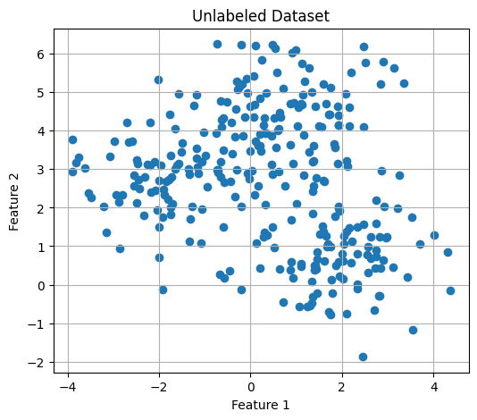
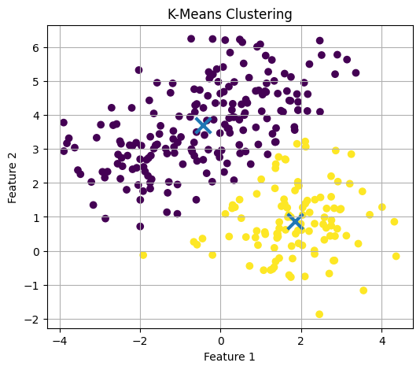
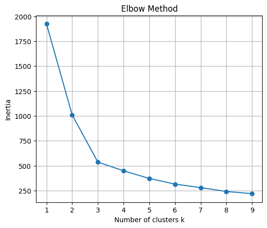
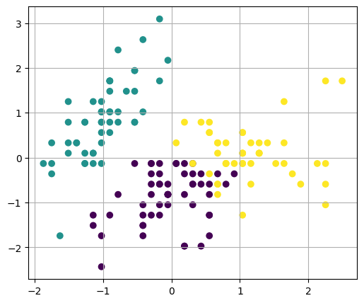

Introduction to Unsupervised Learning#
Audience: Students with basic Python, NumPy, Matplotlib, and introductory machine learning background.
Learning Goals#
By the end of this notebook, students should be able to:
Explain what unsupervised learning means
Compare supervised and unsupervised learning
Use PCA for dimensionality reduction
Use K-means clustering
Use hierarchical clustering
Use DBSCAN clustering
Interpret clustering results visually
0. Setup#
import numpy as np
import matplotlib.pyplot as plt
from sklearn.datasets import make_blobs, make_moons, load_iris
from sklearn.preprocessing import StandardScaler
from sklearn.decomposition import PCA
from sklearn.cluster import KMeans, AgglomerativeClustering, DBSCAN
from sklearn.metrics import silhouette_score
np.random.seed(0)
1. What Is Unsupervised Learning?#
In supervised learning, the training data include labels.
Examples:
image → cat/dog
student data → pass/fail
material features → phase label
In unsupervised learning, the data do not have labels.
The goal is to discover hidden structure, such as:
clusters
low-dimensional patterns
outliers
similarity relationships
2. Generate a Simple Dataset#
We create a synthetic dataset with natural clusters. In a real unsupervised learning problem, these labels would not be known.
X, true_labels = make_blobs(
n_samples=300,
centers=3,
cluster_std=1.0,
random_state=0
)
plt.figure(figsize=(6, 5))
plt.scatter(X[:, 0], X[:, 1])
plt.xlabel("Feature 1")
plt.ylabel("Feature 2")
plt.title("Unlabeled Dataset")
plt.grid(True)
plt.show()

3. K-Means Clustering#
K-means tries to divide data into k groups.
Basic idea:
Choose cluster centers
Assign each point to the nearest center
Update the centers
Repeat
kmeans = KMeans(n_clusters=2, random_state=0, n_init=10)
pred_labels = kmeans.fit_predict(X)
plt.figure(figsize=(6, 5))
plt.scatter(X[:, 0], X[:, 1], c=pred_labels)
plt.scatter(
kmeans.cluster_centers_[:, 0],
kmeans.cluster_centers_[:, 1],
marker="x",
s=200,
linewidths=3
)
plt.xlabel("Feature 1")
plt.ylabel("Feature 2")
plt.title("K-Means Clustering")
plt.grid(True)
plt.show()

4. Choosing the Number of Clusters: Elbow Method#
The K-means objective is called inertia.
A smaller inertia means points are closer to their cluster centers, but using too many clusters can overfit.
inertias = []
K_values = range(1, 10)
for k in K_values:
model = KMeans(n_clusters=k, random_state=0, n_init=10)
model.fit(X)
inertias.append(model.inertia_)
plt.figure(figsize=(6, 5))
plt.plot(K_values, inertias, marker="o")
plt.xlabel("Number of clusters k")
plt.ylabel("Inertia")
plt.title("Elbow Method")
plt.grid(True)
plt.show()

Look for an “elbow” where improvement begins to slow down.
5. Silhouette Score#
The silhouette score measures how well-separated clusters are.
Close to 1: well-separated clusters
Around 0: overlapping clusters
Negative: likely incorrect assignments
score = silhouette_score(X, pred_labels)
print("Silhouette score:", score)
Silhouette score: 0.44582632494402635
Load the Iris Dataset#
The Iris dataset has 4 features. We will ignore the labels and use PCA to reduce the data to 2 dimensions.
iris = load_iris()
X_iris = iris.data
feature_names = iris.feature_names
print("Shape of X_iris:", X_iris.shape)
print("Feature names:")
for name in feature_names:
print("-", name)
Shape of X_iris: (150, 4)
Feature names:
- sepal length (cm)
- sepal width (cm)
- petal length (cm)
- petal width (cm)
Standardize the Data#
PCA is sensitive to feature scaling, so standardization is usually important.
scaler = StandardScaler()
X_scaled = scaler.fit_transform(X_iris)
print("Original shape:", X_scaled.shape)
Original shape: (150, 4)
7. PCA + K-Means#
Now we apply K-means to the PCA-reduced Iris data.
kmeans_iris = KMeans(n_clusters=3, random_state=0, n_init=10)
iris_clusters = kmeans_iris.fit_predict(X_scaled)
plt.figure(figsize=(6, 5))
plt.scatter(X_scaled[:, 0], X_scaled[:, 1], c=iris_clusters)
plt.grid(True)
plt.show()
